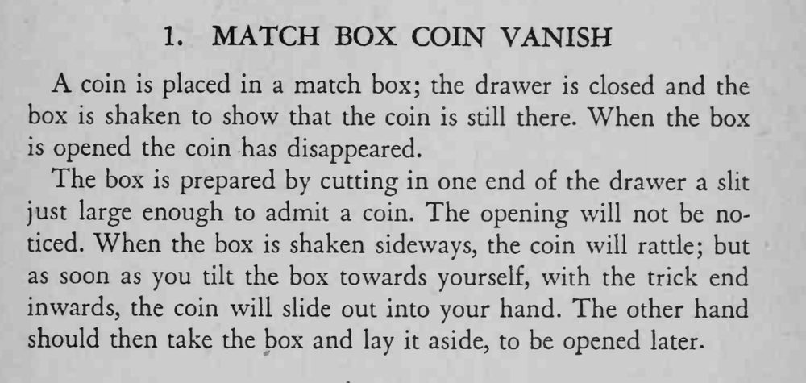

硬币放进火柴盒、合上抽屉摇一摇还有响声，再打开时硬币却不见了。
剪缝要开在盒角不显眼处；摇盒时只能横向摇，否则硬币会提前滑出。

coin is placed in a match box; the drawer is closed and the box is shaken to show that the coin is still there. When the box is opened the coin has disappeared. The box is prepared by cutting in one end of the drawer a slit just large enough to admit a coin. The opening will not be noticed. When the box is shaken sideways, the coin will ratde; but as soon as you tilt the box towards yourself, with the trick end inwards, the coin will slide out into your hand. The other hand should then take the box and lay it aside, to be opened later.